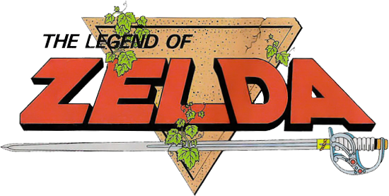
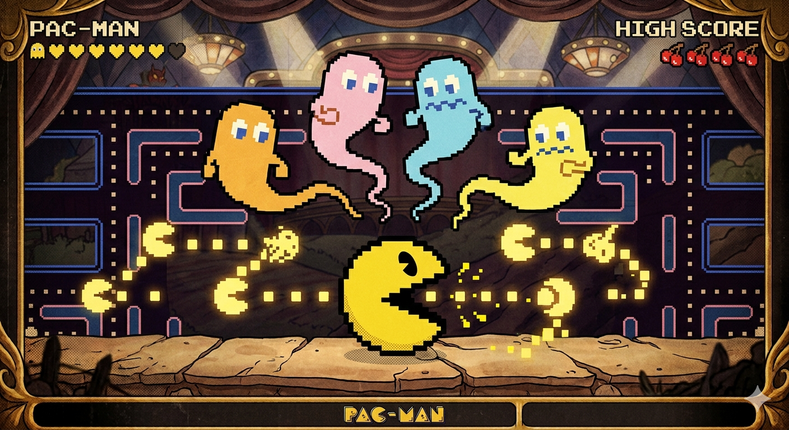
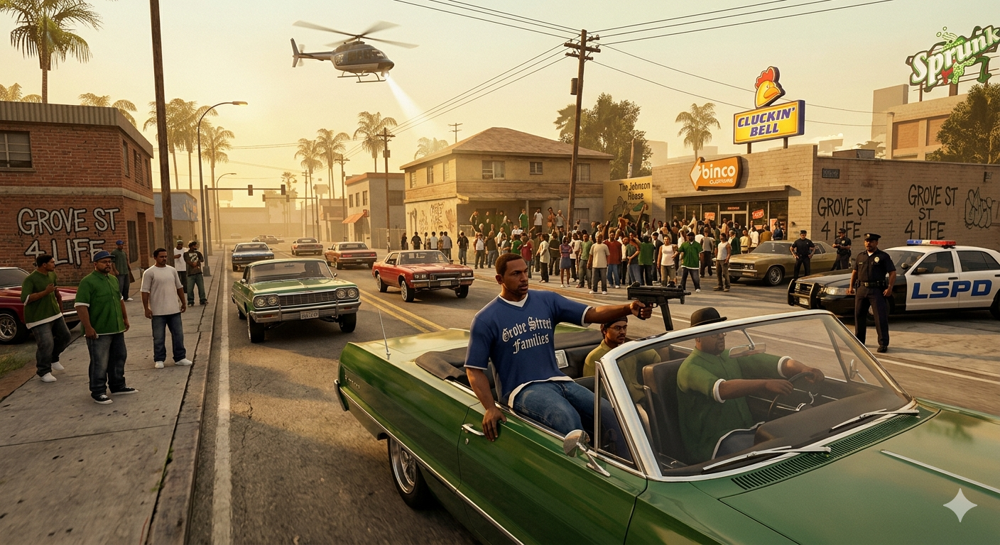
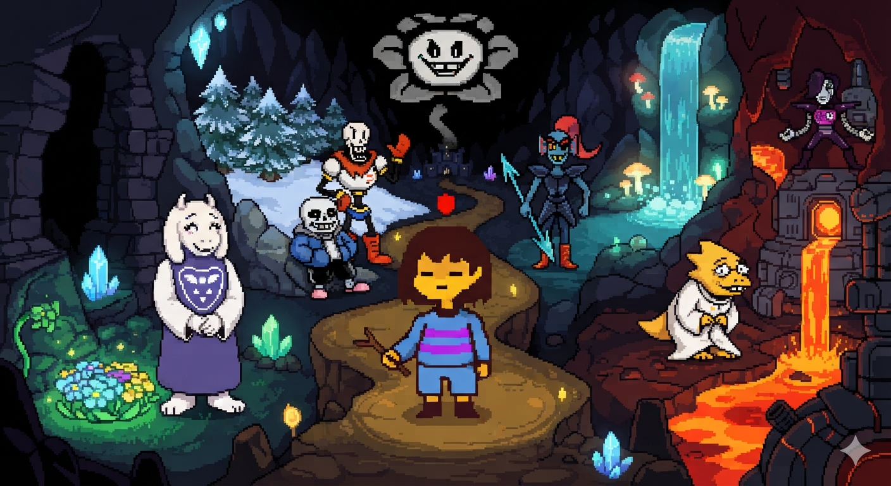
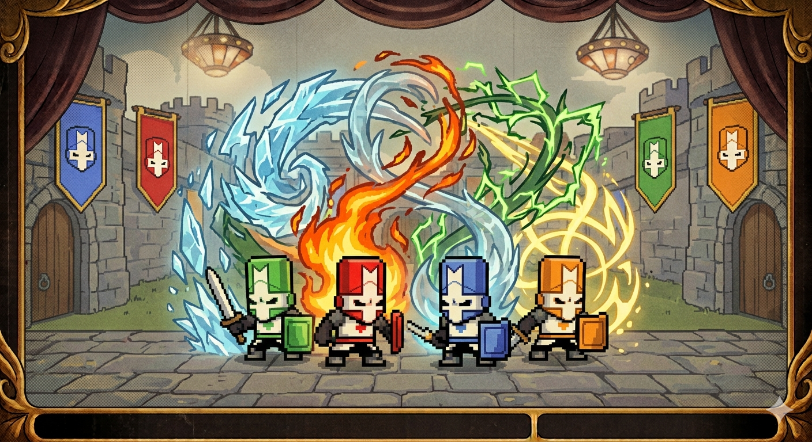

Meu primeiro post
Por: Gabriel Henrique
Bem-vindo ao BLOGMÓN! Espero que você goste do conteúdo que compartilharei aqui sobre essas curiosidades bacanas nesse tobogã tecnológico!
Compartilharei aqui tudo sobre oque eu sei sobre o mundo de jogos virtual!
Por: Gabriel Henrique
Bem-vindo ao BLOGMÓN! Espero que você goste do conteúdo que compartilharei aqui sobre essas curiosidades bacanas nesse tobogã tecnológico!

Por: Gabriel Henrique
Você sabia que existem Pokémons raríssimos com cores alternativas que soltam faíscas ao entrar em
batalha? Eles são os chamados "Shiny".
Nos primeiros jogos, a chance de achar um na grama era
de 1 em 8.192. O mais famoso da história é o Gyarados Vermelho, encontrado no Lago da Fúria. O termo
"Shiny" foi criado pelos próprios fãs e oficializado pela Nintendo anos depois. Enquanto alguns
mudam drasticamente, como o Charizard que fica preto, outros como o Pikachu mudam apenas o tom do
amarelo.
FONTE: Forum Oficial Pokémon

Por: Gabriel Henrique
Você já se perguntou de onde surgiu o nome da franquia The Legend of Zelda? O criador do jogo, Shigeru Miyamoto, revelou que se inspirou em uma pessoa real da história: a escritora americana Zelda Fitzgerald, que era esposa do famoso autor F. Scott Fitzgerald. Miyamoto achou o som da palavra "Zelda" extremamente forte, bonito e marcante para uma princesa de fantasia. Já o nome do protagonista, Link, foi escolhido porque a palavra significa "elo" em inglês, indicando que o personagem conecta o jogador ao mundo virtual.
FONTE: Forum de comunidade
.png)
Por: Gabriel Henrique
Para fazer o jogo Super Mario Bros. rodar nos consoles antigos em 1985, a Nintendo precisou usar truques geniais de economia de espaço. O cartucho original do jogo tinha apenas 40 kilobytes de memória disponível (menos que uma foto borrada de celular hoje em dia). Para economizar armazenamento, o designer Shigeru Miyamoto usou o mesmíssimo desenho (sprite) para fazer as nuvens no céu e os arbustos no chão. A única diferença entre eles é a paleta de cores: as nuvens recebem a cor branca e os arbustos recebem a cor verde.
FONTE: Super mairo wiki.

Por: Gabriel Henrique
O clássico Pac-Man dos fliperamas possui uma tela final oculta que é tecnicamente impossível de vencer. Isso acontece porque o jogo foi programado usando um sistema de 8 bits. Quando o jogador consegue chegar ao nível 256, o contador de frutas do código tenta carregar um valor que ultrapassa o limite de memória do hardware. Isso gera um erro chamado "Split-Screen" (tela dividida), onde a metade direita do cenário vira um emaranhado caótico de letras, números e símbolos coloridos, impedindo que você colete os pontos necessários para avançar.
FONTE: Fandom de Pac-Man.
.png)
Por: Gabriel Henrique
O visual impressionante de Cuphead não foi feito por computação gráfica moderna, mas sim totalmente desenhado à mão no papel. Os desenvolvedores do Studio MDHR se inspiraram estritamente nos desenhos animados da década de 1930, como os dos estúdios Fleischer e Disney. Cada quadro de animação dos personagens e chefes foi pintado individualmente usando canetas nanquim e aquarela antes de ser digitalizado. O processo foi tão demorado e caro que os criadores precisaram hipotecar suas próprias casas para financiar o projeto. O resultado foi um jogo incrivelmente lindo e famoso por sua dificuldade extrema.

Por: Gabriel Henrique
Mesmo décadas após o seu lançamento, Grand Theft Auto: San Andreas ainda esconde segredos e lendas urbanas que assustam a comunidade. Nos bosques de Back o' Beyond, existem "carros fantasmas" (modelos Glenshit modificados) que andam sozinhos colina abaixo devido a falhas na física de geração do mapa. Além disso, no meio do deserto de Bone County, os jogadores podem encontrar um poço com um saco de corpos abandonado. Mitos sobre o Pé-Grande e alienígenas na névoa de San Fierro geraram modificações famosas e mantêm o clássico do CJ vivo no imaginário cultural até hoje.
FONTE: Eurogamer.

Por: Gabriel Henrique
Undertale é uma obra-prima que desafia as regras tradicionais dos videogames ao permitir que você termine a história sem derrotar nenhum inimigo. O criador do jogo, Toby Fox, programou um sistema que quebra a quarta parede de forma genial: o jogo memoriza suas ações mesmo se você resetar ou fechar a janela. Se você eliminar um personagem e depois voltar no tempo para salvá-lo, o jogo ou o próprio personagem ainda vão lembrar do seu ato cruel em diálogos assustadores. Além disso, a trilha sonora inteira foi composta pelo próprio criador, e o esqueleto Sans se tornou um dos chefes mais difíceis da história dos games.

Por: Gabriel Henrique
Você sabia que cada um dos cavaleiros coloridos de Castle Crashers possui uma magia elemental única que muda totalmente a estratégia do jogo? O Cavaleiro Verde usa um veneno que causa dano contínuo aos inimigos. O Cavaleiro Vermelho consegue derreter hordas inteiras usando ataques de eletricidade travada. O Cavaleiro Azul usa o gelo, sendo considerado o melhor para congelar e imobilizar chefes difíceis. Por fim, o Cavaleiro Laranja domina o fogo e possui o maior alcance de magia do jogo. Essa profundidade ajudou o título a reviver o gênero beat 'em up clássico.